今思えば、生まれ育った街が僕に与えた影響はとても大きかったのだと思います。僕は横須賀生まれなのですが、家が米軍基地のすぐ近くだったんです。アメリカ文化が色濃く残っていた頃で、許可があれば基地の中にも入れた。ボウリング場も映画館もレストランも、そこはもう立派なアメリカ。幼心に『格好いいな』と思っていたのを覚えています。
その後、親の転勤で岡山の倉敷に引っ越すのですが、そこは世界的にも有名なデニムの街。アメリカンカルチャーの洗礼を受けた後、デニムに深く触れるようになり、また横須賀に戻ってきて古着を漁る。そんな少年期を過ごしていました。
Interview CATAL DESIGN
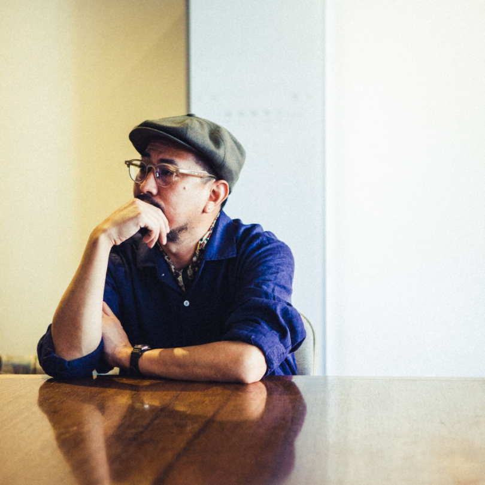
2022.05.17
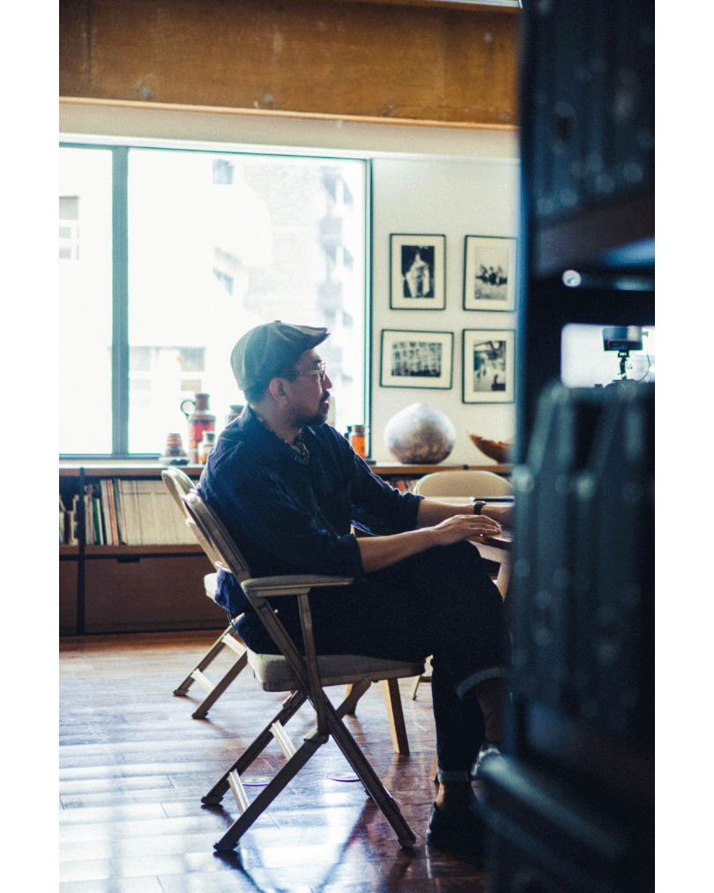
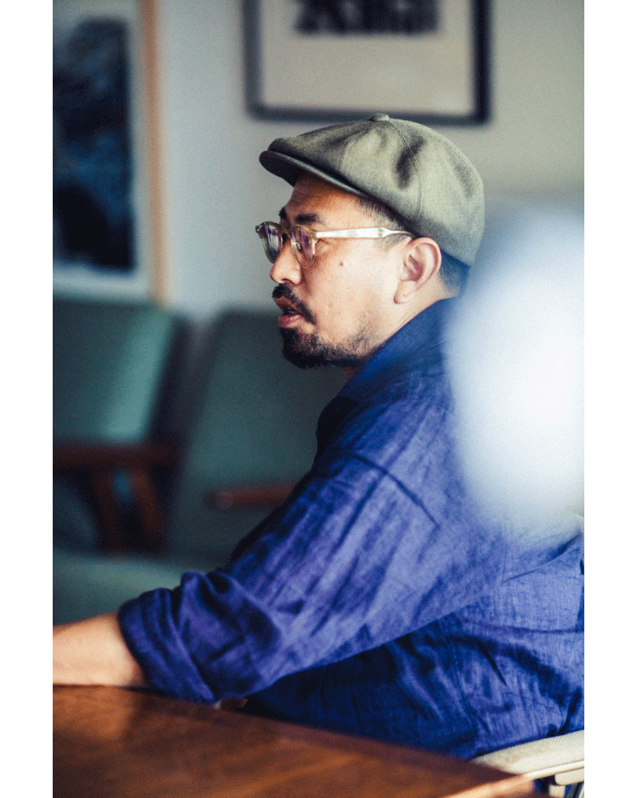
周りがそろそろ就職でソワソワし始めた時には、僕は自然とスタイリストになりたいと思っていました。それで僕は大学卒業前に、当時憧れていたスタイリストの渡辺康裕さんに履歴書を出したんです。アシスタントに就かせてくださいと。僕は大学を辞めてすぐにでも働きたかったのですが、『大学を出てからまたきなさい』という返事をいただきました。僕のために言ってくれたことだとは思うんですが、僕はもう待てなくてね。それから怒涛のラブレター攻撃。毎月手紙を送りました。2年間できっちり24通(笑)。それを渡辺さんはずっととっていてくれていたみたいで、僕の結婚式で披露されて恥ずかしい思いをしました(笑)。
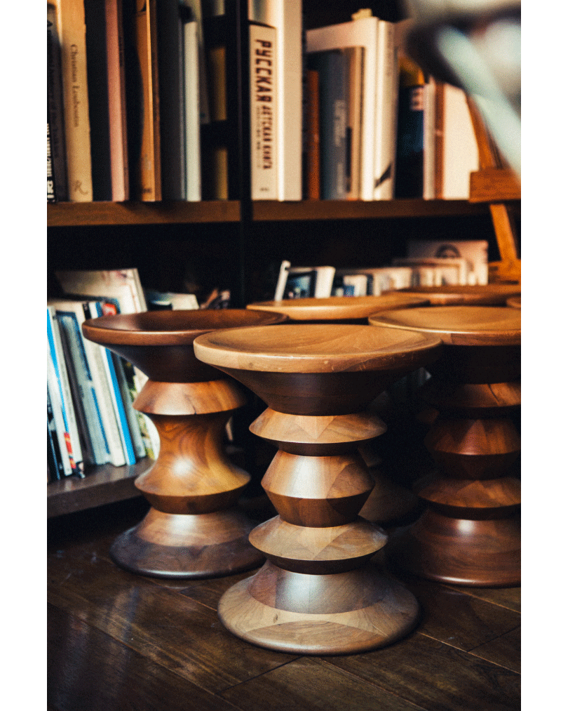
アシスタントの頃は何もかもが知らないことだらけで、本当に苦労しました。大抵のことはできる自信があったのですが、完全に鼻をくじかれましたね。いかに自分が大海を知らなかったかを思い知らされました。でも楽しかったですよ。充実してた。その時は夢しかみてなかったしね。
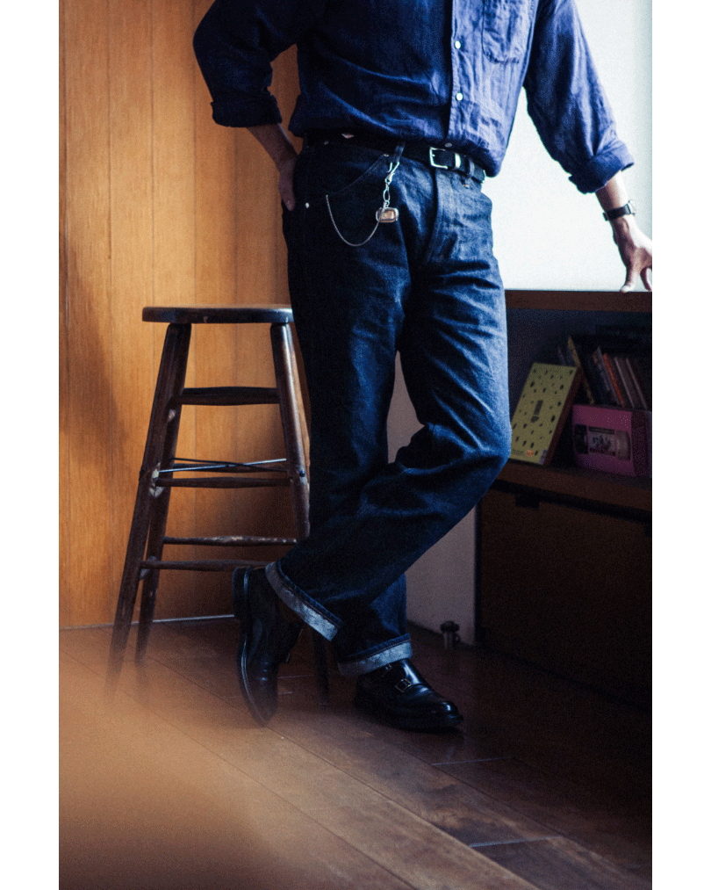
やっぱり素敵な職業だと思いましたね。自分が用意した服を着て笑顔になってもらったり喜んでもらえたり、時にその人に自信を与えてあげられることは本当に嬉しいことだったし、雑誌などで自分がイメージした通りの作品を作り上げることができた時は個人的に悦に浸ることもできた。ファッションってとてもポジティブなもの。実際の作業は想像以上に地味だけど、素晴らしい仕事だと思っています。
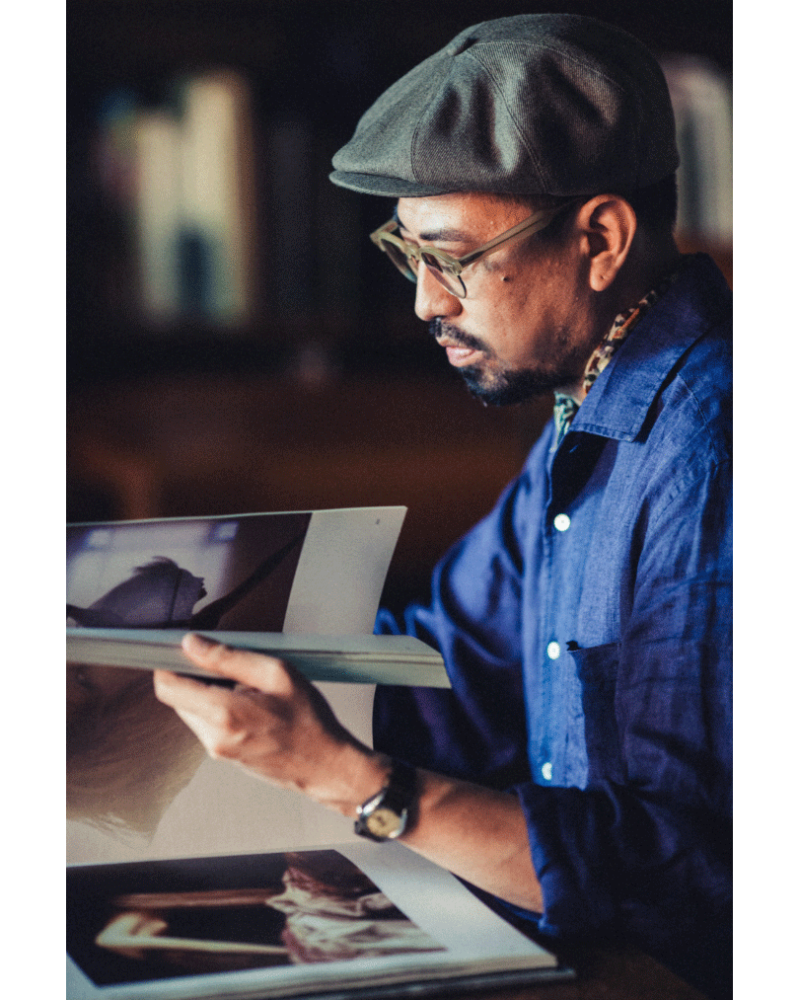
アイデアを生み出すためにはもちろんインプットは必要です。だけど、何もそれは特別なことじゃなくて、普段の生活の中にあると思うんですよね。街で歩いている人を見て『ああ、あの色合わせはいいな』とか『あの建物の感じがいいな』とか。妻にはキョロキョロするなと怒られますが（笑）。あとはもう少し状況が落ち着いて、海外に行けるようになれば嬉しいですね。やっぱりたくさんの発見がありますから。そこで得たアイデアを、自分なりに消化して、『これ良くない！？』ってみんなと共有したい。そういう感覚かな。
もちろんアートにも触れるし、映画も見ます。あとは骨董市も大好き。多くのものがまだ手作りだった頃の職人の熱意に触れると感動します。
もちろんアートにも触れるし、映画も見ます。あとは骨董市も大好き。多くのものがまだ手作りだった頃の職人の熱意に触れると感動します。
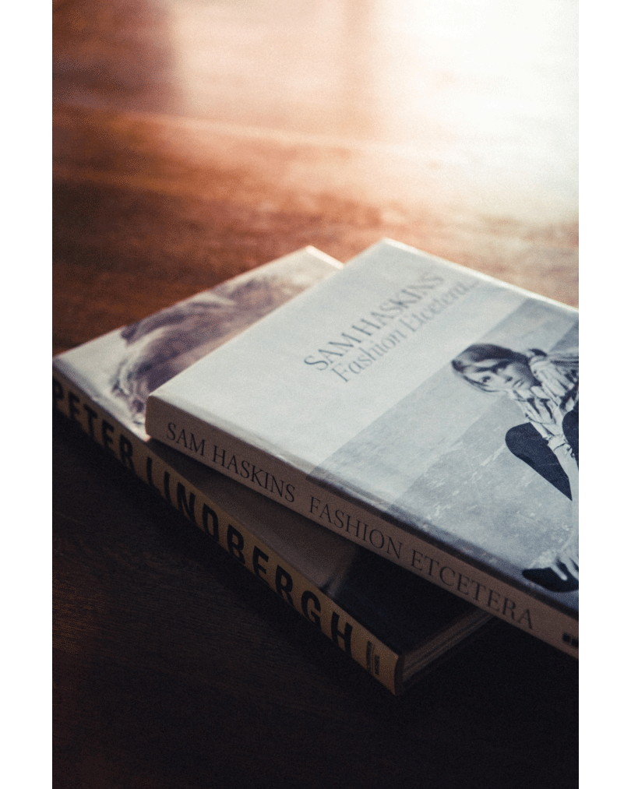
〈映画は週に4,5本見ます。でもやっぱり視点がファッションになってしまうかな。だから「キングスマン」は大好きだし「鑑定士と顔のない依頼人」も好き。ウェス・アンダーソンの作品は全部見ていて「フレンチ・ディスパッチ」もすごくよかったですよね。
好きな写真家はあげればキリがないかもしれません。ファンタジーが素敵なティム・ウォーカー、そこにある空気ごと切り取るようなピーター・リンドバーグ、とてもグラフィカルなサム・ハスキンス、NYの街を詩的に捉えたソール・ライター。「The important thing in life is not what you get but what you throw out. 肝心なのは何を手に入れるかではなく、何を捨てるかなんだ」。ソール・ライターは写真に添えてある言葉にもグッときます。
好きな写真家はあげればキリがないかもしれません。ファンタジーが素敵なティム・ウォーカー、そこにある空気ごと切り取るようなピーター・リンドバーグ、とてもグラフィカルなサム・ハスキンス、NYの街を詩的に捉えたソール・ライター。「The important thing in life is not what you get but what you throw out. 肝心なのは何を手に入れるかではなく、何を捨てるかなんだ」。ソール・ライターは写真に添えてある言葉にもグッときます。
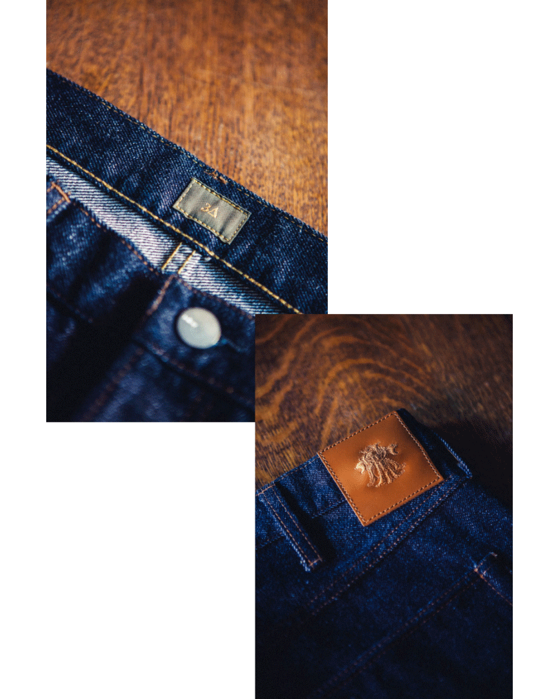
依頼に応えるのではなく、自分から発信することに取り組んでみたくなってブランドを立ち上げてジーンズやシルバーアクセサリーを作ったりしています。ブランド名は3A（ミツエ）。ジーンズもシルバーもベースにあるものは一緒。自分がこれまで蒐集してきたアンティークをモチーフに、再構築して純粋に今自分が欲しいと思うものを作っています。次はブローチを作ってみたいですね。
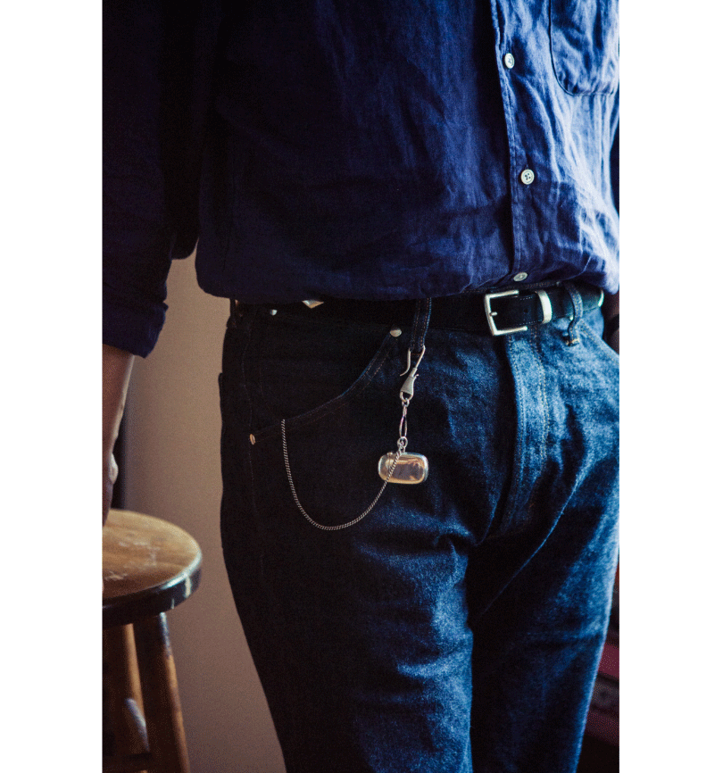

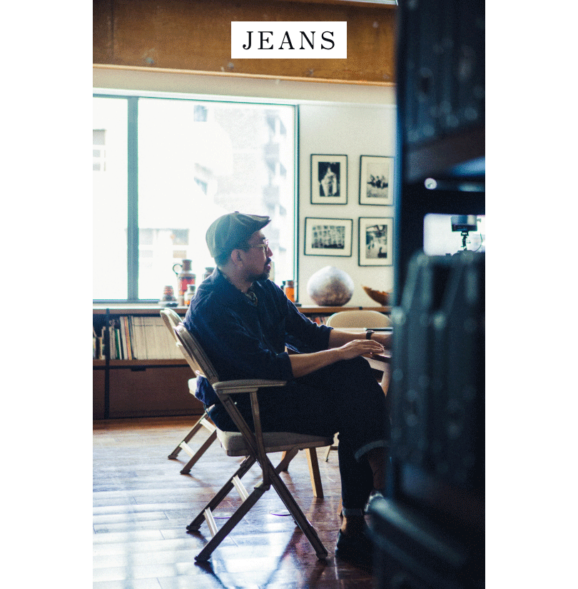
新しくても古くても楽しめる。それがジーンズの素晴らしいところ。それに地面に座ったり膝をついたり、スタイリストって現場の作業も結構タフなんですよね。だからきれいなスラックスは向いていない。僕の場合、オンの時にジーンズが多くて、オフの時にスラックスをはくことが多いです。
今はいているジーンズはさっき話した3Aのもの。古い織機で作ったデニム生地使っています。ポケットの形にすごくこだわっていて、手が入れやすい。ゆっくりと時間をかけて自分の体になじんできて、最終的には自分の相棒になる。そんな古き良きジーンズを目指して作りました。
今はいているジーンズはさっき話した3Aのもの。古い織機で作ったデニム生地使っています。ポケットの形にすごくこだわっていて、手が入れやすい。ゆっくりと時間をかけて自分の体になじんできて、最終的には自分の相棒になる。そんな古き良きジーンズを目指して作りました。
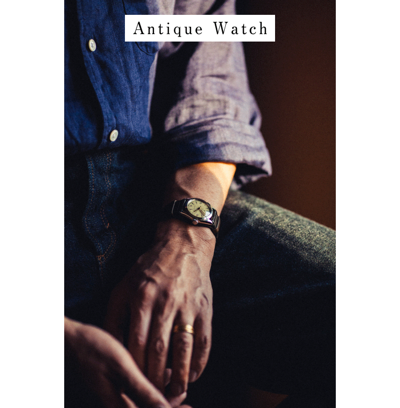
これだけ完成されたものってなかなかないですよね。使われているパーツの美しさや時代背景など、すべてが反映されている。その価値は僕が80歳になっても揺るがない。むしろよりその価値を高めていると思うんです。そしてきっと僕の知らない誰かにまた引き継がれる。見ているだけでもお酒が飲めます（笑）。
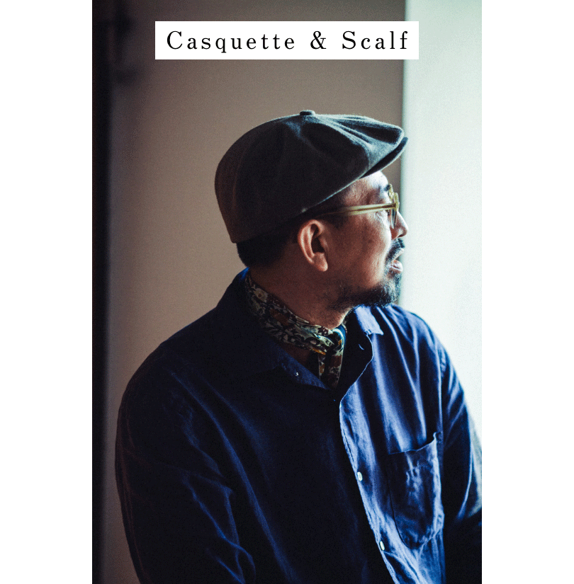
僕の先生が被っていたのをみて、格好いいなと思ったのが始まり。今はもう、これがないとスタイルが完結しない気がするくらい、自分の一部になっています。
年齢を重ねるにつれ、気負いなくつけられるようになったのがスカーフ。冷やしたくないっていう物理的な理由もありますが、革靴と一緒で、カジュアルなスタイルをひとつ引き締める役割もあります。古着屋にある2000~3000円のもので、いいものを見つけては集めています。
年齢を重ねるにつれ、気負いなくつけられるようになったのがスカーフ。冷やしたくないっていう物理的な理由もありますが、革靴と一緒で、カジュアルなスタイルをひとつ引き締める役割もあります。古着屋にある2000~3000円のもので、いいものを見つけては集めています。
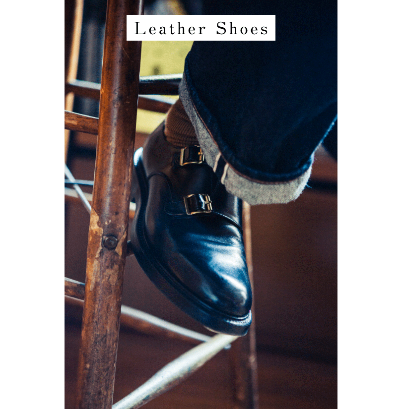
労働者のユニフォームであるジーンズに高級な革靴を合わせる。つまりギャップを演出するというのは、ファッションの勉強をし始めて最初に教えられた考え方です。基本的なテクニックですが、そのコントラストが僕は好き。ソックスには色を取り入れることも多いです。
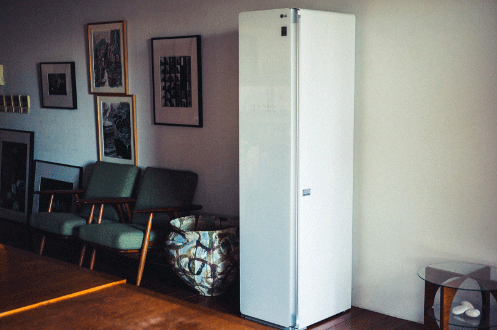
洋服と匂いって永遠のテーマっていうか、切っても切り離せないものじゃないですか。生活している以上。花粉やウイルスもそう。僕はニットも大好きなんですが、着るたびにいちいち洗うなんてことは流石にできない。ジーンズも色落ちのことを考えれば、できればそんなに頻繁に水を通したくない。そのジレンマというかフラストレーションがこれで解決できるとなれば、こんなにいいことはないですよね。
それにスタイリストという仕事上、借りてきたサンプルをタレントさんに着せる前にクリーンナップできるっていうのはすごく大きなメリット。ちょっとした不快感というか不安が解消できると思うんです。それはお借りしたお洋服をブランドに返却するときも同じ。そういう意味で、スタイリストという仕事には不可欠なものだと感じましたね。今後、世間的にも必要になってくるアイテムだと思います。
それにスタイリストという仕事上、借りてきたサンプルをタレントさんに着せる前にクリーンナップできるっていうのはすごく大きなメリット。ちょっとした不快感というか不安が解消できると思うんです。それはお借りしたお洋服をブランドに返却するときも同じ。そういう意味で、スタイリストという仕事には不可欠なものだと感じましたね。今後、世間的にも必要になってくるアイテムだと思います。
PROFILE
1978年生まれ、神奈川県出身。メンズファッション誌、広告を中心にスタイリストとして活躍。アートやカルチャーにも造詣が深く、男女問わず俳優や アーティストからも信頼が厚い。
Interview CATAL DESIGN